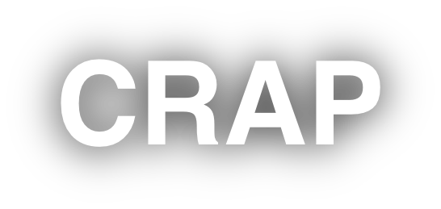
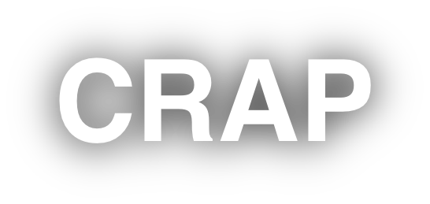

CRAP er en betegnelse for principperne Kontrast, Gentagelse, Justering og Nærhed, som er en del af principperne for grafisk design og layout. Disse principper hjælper designere med at skabe visuelt tiltalende og let forståelige layouts. Nedenunder her kan du læse kort om hvert princip.
Billederne på denne side er fra "Unsplash.com" og siden vwo.com "https://vwo.com/blog/crap-design-principles/"
Kontrasten handler om at skabe forskel i designelementer for at gøre visse dele mere fremtrædende. Det kan indebære at bruge stærke farveforskelle, forskellige skriftstørrelser eller forskellige former. Formålet er at hjælpe med at organisere information, guide seerens øjne gennem designet og fremhæve de vigtigste punkter.
Repetition i webdesign betyder at gentage designelementer som farver, skrifttyper eller layout på et website. Dette skaber konsistens og gør sitet genkendeligt, hvilket hjælper brugeren med at navigere og forstå interaktioner bedre.

Justering handler om oprettelsen af en visuel forbindelse mellem elementer. Ved at justere elementer langs fælles linjer eller akser skabes en ren og organiseret følelse, som giver designet en stærkere strukturel sammenhæng.
Nærhed anvendes til at gruppere relaterede designelementer sammen. Elementer, der har relation til hinanden, placeres tættere på hinanden for at skabe en visuel enhed. Dette hjælper med at organisere information og gør det nemmere for brugeren at forstå sammenhænge mellem forskellige dele af indholdet.